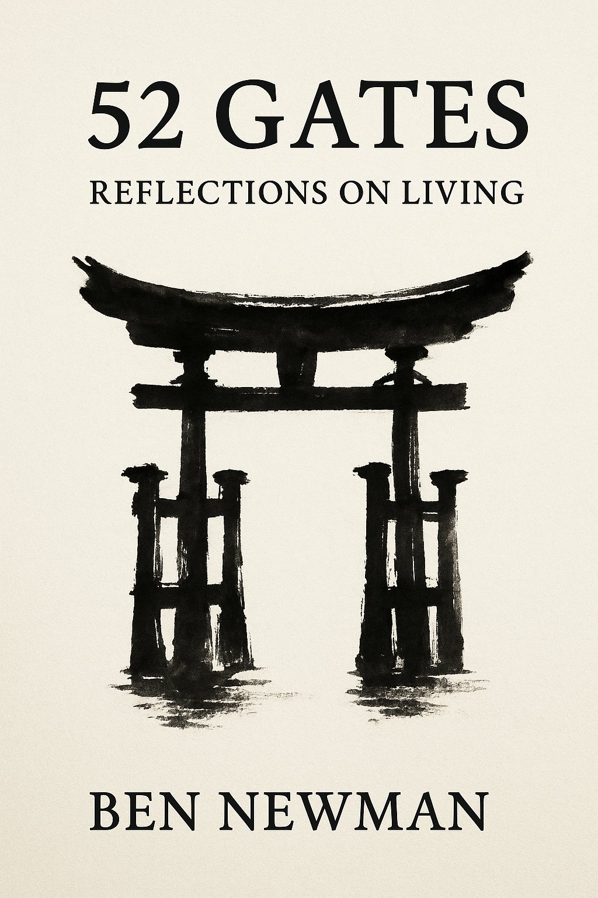

Each gate is a short reflection — a moment of awareness, a breath of calm, a glimpse of wonder. The pages are meant to be savored slowly: one gate each week, or whenever life asks you to pause. Together, the fifty-two form a year of doorways.
The Gates draw on contemplative traditions across boundaries — Jewish mysticism, Buddhist practice, the wisdom of stillness and presence — and meet readers wherever they are. You don't need a tradition to begin. You only need a moment, a breath, a willingness to step through.
Some readers move through one gate at a time, in order. Others let the book fall open to whatever the day asks for. Some return again and again to the same gate. There is no wrong way to read this book.
For those who want to work with the Gates more deeply — alone or in a group — a comprehensive companion volume.
Whether you are leading a group, joining one, or simply walking through the Gates on your own, this companion is built to support the practice.
Something different happens when the Gates are explored in conversation. A line you might have passed over can open completely when someone else speaks it from their own life. And when you speak, you often find yourself saying what you didn't know you knew.
The Gates are less like ideas to understand and more like doors. We walk through them together.
Groups are forming around the world — in homes, yoga studios, retreat centers, online. There is no certification required. No special training. Just a few people, a quiet hour, and a willingness to listen.
Register your group below and you'll receive an invitation to the seasonal Zoom — four gatherings a year for facilitators to share what's working, ask questions, and explore one Gate together in depth.
Tell us where the Gates are gathering.
Ben Newman is a rabbi, teacher, writer, and musician whose work bridges ancient wisdom and contemporary life.
He is co-rabbi of Pleasantville Community Synagogue in New York and the author of AI for Clergy and The 10 Pathways. His writing weaves Jewish mysticism with Buddhist practice, contemplative inquiry, and the texture of ordinary life. He lives in Dobbs Ferry, New York.